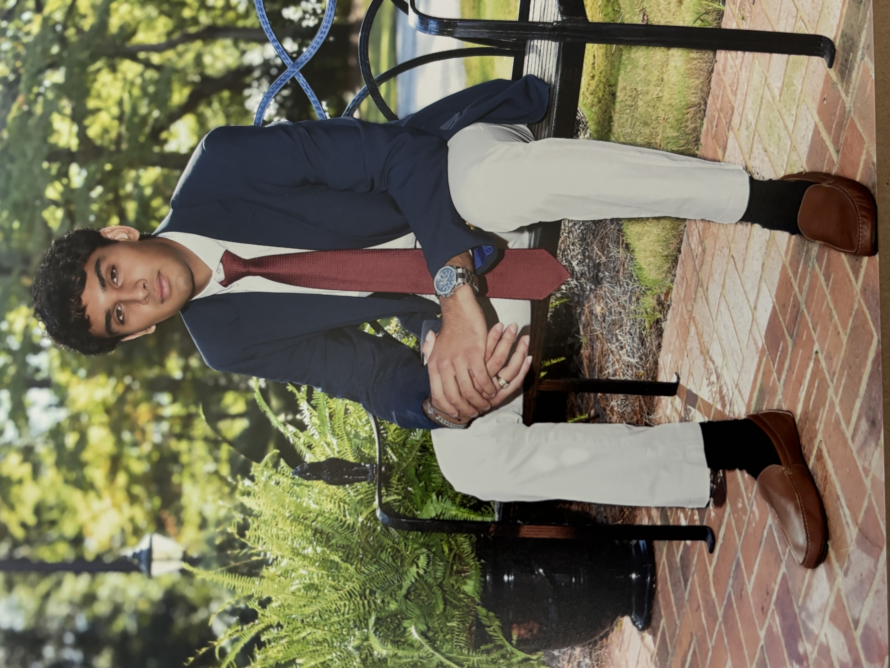

About Me

I am a first-year Neuroscience student at the University of North Carolina at Chapel Hill, where I plan to graduate in 2030. My interest in medicine began with an interest in the brain and the biological processes that influence human health. Through research and clinical experience, I have developed an interest in combining scientific investigation with patient care.
Before college, I participated in the Summer Ventures program at the University of North Carolina Wilmington, where I worked in the Wang Lab on a project investigating lipid nanoparticles (LNPs) as a delivery system for mRNA into astrocytes. I worked on producing nanoparticles of an appropriate size for intracellular delivery and contributed to a literature review on a proposed Huntington’s disease treatment involving LNPs and CRISPR. This experience introduced me to experimental design, scientific problem-solving, and the challenges of translating research into potential treatments.
During the summer before college, I trained and worked as a Medical Assistant at Pamlico Medical Center in Bayboro, NC. I gained experience with patient intake, vital signs, EKGs, electronic health records, and other clinical responsibilities. I also learned the importance of patient communication. For example, when an elderly patient shared that he sometimes struggled to remember his own name, I focused on listening and engaging with him. This experience reinforced the importance of treating patients with attention and respect, alongside providing clinical care.
At UNC, I plan to build a strong foundation in neuroscience while pursuing additional clinical and research opportunities. I hope to attend medical school and develop a career that combines neuroscience, scientific research, and patient care. I am particularly interested in understanding how research on the nervous system can contribute to improved treatments and patient outcomes.
"By asking a novel question that you don't know the answer to, you discover whether you can formulate a way of finding the answer, and you stretch your own mind, and very often you learn something new."
Walter Gilbert